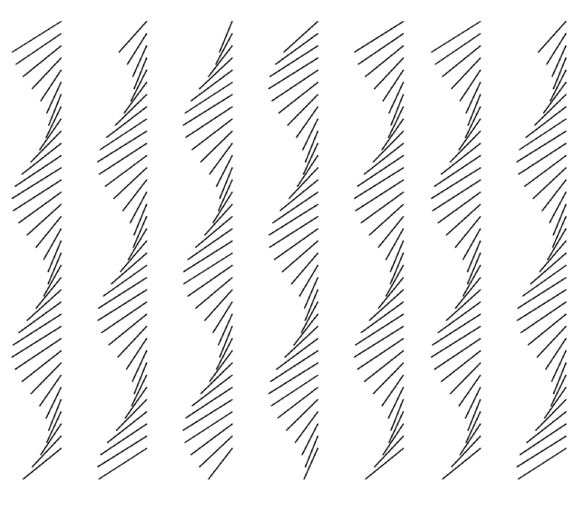
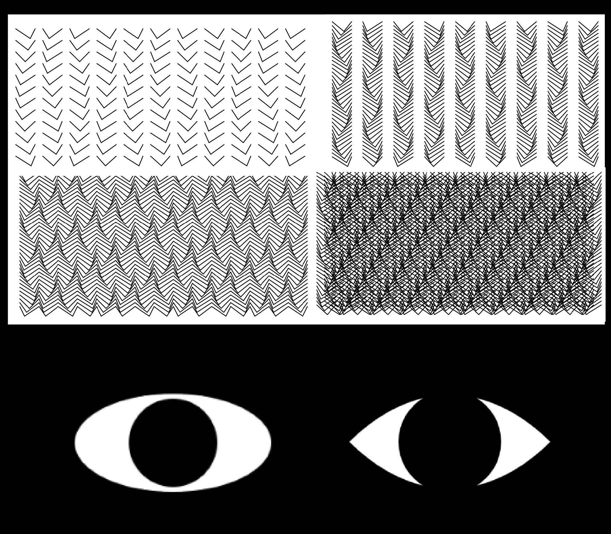
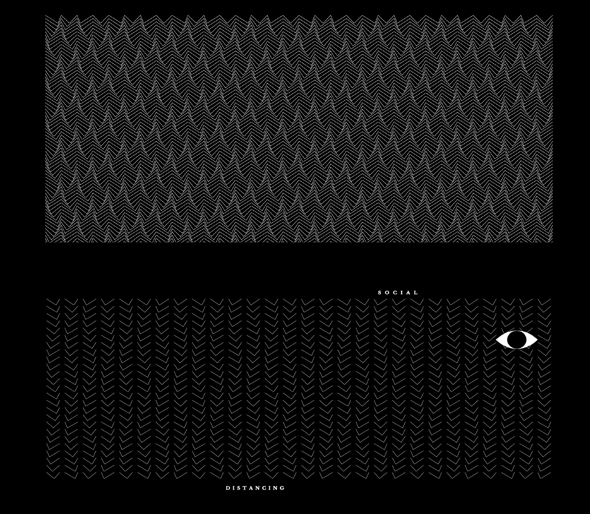
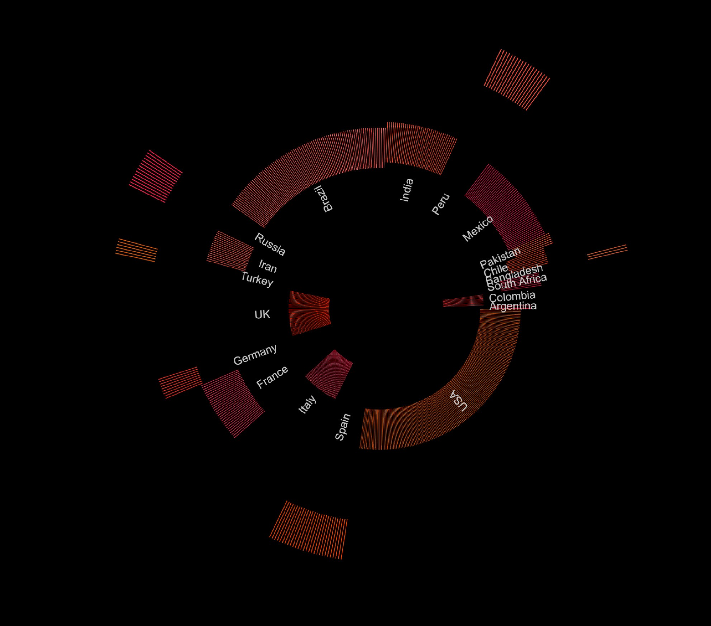
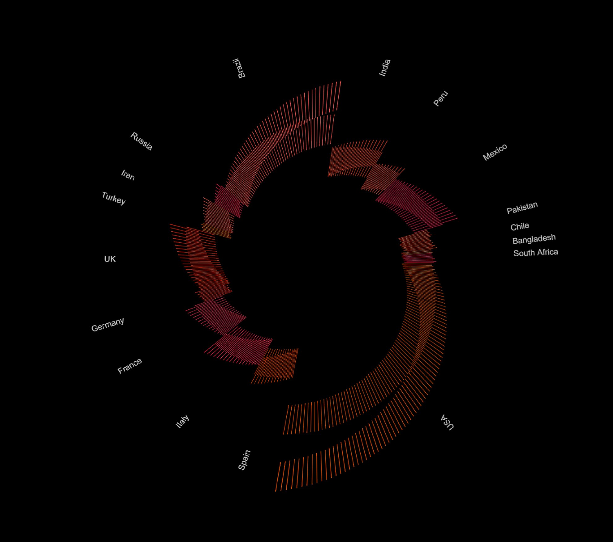

This project based off the data set of Covid-19 death rates in the top countries worldwide by July 2020. The interpretation visual above is a concept inspired by the lack of social responsibility where the majority population only practice Covid-19 safety measures like social distancing when they are being watched. While the visual data sketch below is a graph that represents the death rates in each country.
Reflection
The reason for choosing this dataset of Covid-19 death rates is because it is a pandemic that we will remember for a lifetime, and I wanted to create something in remembrance of the lives lost. The data showed the shockingly large amount of death rates. My design direction for this project was to involve metaphorical visual representations like the lines of the visual interpretation sketch being the population and the eye as the cursor representing being in the eye of the public. The visual data graph utilized each line to represent one thousand deaths in a donut chart.
In both sketches, the lines represent human lives in the metaphor of “life line”. Whereby in the interpretation sketch the lines represent living people, while the data sketch represents people who have died. The interpretation sketch has the interaction of when the eye hovers over the moving lines resembling people, where the distance gradually increased like social distancing. The data sketch’s animation ironically resembles breathing while representing number of deaths.
Issues
While constructing my sketches, I realized that I had not familiarize myself fully with how coding works and its logic. However, through studying and referencing from sketches, I was able to more properly and efficiently understand how functions and the order of lines in a sketch run.
Feedback
Through user testing, I was able to gather another perspective like: the visual interpretation sketch, the users mentioned that the meaning is comprehensive but the lack of a click function and the speed of animation could be improved. While the visual data sketch needed more distinct shapes and colours.
Achievements
I was able to more efficiently present my visuals in a more comprehensive way, especially for the visual data sketch. Whereby I had a complete graph shape change and colour scheme considerations were put into better thought. For the visual interpretation, I was able to improve the interactivity and experience.

The experimentation of wavy line movements

Variation of distance between lines and cursor shape

The implementation into the final visual sketch theme

Exploration of disintinctive shapes for graph

The final shape achieved for a distinct overview of data